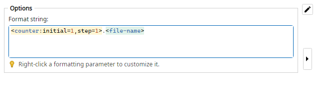

Replaces the entire selected field with the result of a format string. Mix literals and tokens
such as <file-name> or
<counter:…>. An empty format string clears the field. Edit the
pattern with the Format Editor.
(any previous name) >>> 01.1920x1080
report >>> report_backup
First example uses a format string like
<counter>.<image-width>x<image-height>. Full token
list: Formatting Tokens.